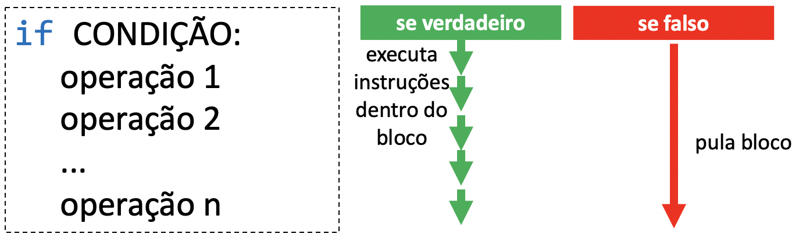
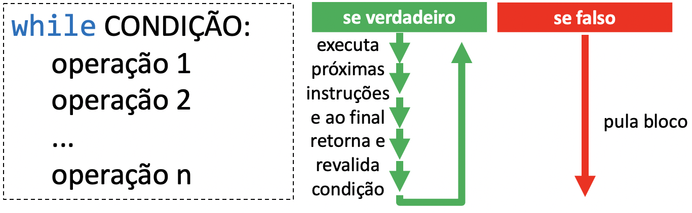

04 - Laços de Repetição (while)¶
O objetivo de aprendizado deste handout é que, ao final da atividade, você seja capaz de utilizar laços de repetição (não se preocupe, vamos explicar o que é isso) em seus programas em conjunto com as estruturas que vimos nas aulas anteriores (if, input, etc.) Para isso, vamos trabalhar com o exemplo de um jogo simples: o programa escolhe um número aleatório e o jogador precisa descobrir qual foi o número escolhido.
Importante
Sempre valide a resposta com o professor ou algum colega que já tenha validado a própria resposta antes de seguir para o próximo exercício.
Aquecimento¶
Para começar, vamos implementar uma versão do jogo na qual o jogador só tem uma chance para acertar (sim, completamente na sorte).
EXERCÍCIO 1¶
Faça um programa que:
- Sorteia um número aleatório entre
1e20e guarda numa variável;- Use a função
randintda bibliotecarandom(dica: procure a documentação na internet)
- Use a função
- Pede ao jogador um número entre
1e20 - Dê o feedback da resposta do jogador:
- Se o número digitado for menor que o número sorteado, escreva
"Muito baixo"; - Caso contrário, se o número digitado for maior que o número sorteado, escreva
"Muito alto"; - Caso contrário, escreva
"Acertou".
- Se o número digitado for menor que o número sorteado, escreva
Repetindo o if¶
Vamos fazer uma breve reflexão. O que seria necessário alterar no código do exercício 1 para que o jogador tivesse 2 chances? Uma solução rápida seria copiar o bloco do if, elif, else e colar no final do programa. Mas e se o jogador tivesse 5 chances? E 100? E se pudesse continuar tentando enquanto não tivesse adivinhado o número?
EXERCÍCIO 2¶
O nosso jogo possui muitas condições, então, para introduzir o próximo conceito, vamos considerar um exemplo menor.
Faça um programa que pergunta ao aluno se ele tem dúvidas na disciplina. Se o aluno responder qualquer coisa diferente de 'não', escreva 'Pratique mais'.
Uma possível solução para esse exercício pode ser encontrada em: https://youtu.be/80jQUj6JmYY. Atenção: consulte o vídeo somente depois de tentar resolver o exercício. Compreender o vídeo não é garantia de que você sabe resolver o problema. Caso você não tenha conseguido resolver o exercício, assista ao vídeo e depois tente novamente sem consultar o vídeo novamente.
Resposta
Seu código deveria ser similar a este:
resposta_do_aluno = input('Você está com dúvidas? ')
if resposta_do_aluno == 'não':
print('Parabéns!')
else:
print('Pratique mais')
Exercício 3¶
Vamos preparar nosso código para que seja possível perguntar novamente se o aluno tem dúvidas caso ele já tenha respondido antes que sim. Adicione uma variável tem_duvidas logo no começo do programa. Inicialize essa variável com (ou seja, faça ela receber inicialmente) o valor True. Coloque todo o seu código original dentro de um if tem_duvidas:.
Além disso, se o aluno responder 'não', mude o valor da variável tem_duvidas para False, pois o aluno não tem mais dúvidas.
Info
Essa modificação não deve alterar o comportamento do seu programa. Teste-o para garantir que ainda está funcionando. Note que, como inicialmente tem_duvidas = True, o programa sempre vai entrar no if.
Antes de prosseguir, compare o seu código com a resposta abaixo. Para os próximos passos fazerem sentido é importante que o seu código siga a mesma estrutura.
Resposta
Com a modificação acima seu código deve ficar semelhante a:
tem_duvidas = True
if tem_duvidas:
resposta_do_aluno = input('Você está com dúvidas? ')
if resposta_do_aluno == 'não':
print('Parabéns!')
tem_duvidas = False
else:
print('Pratique mais')
Considere a seguinte versão modificada do seu programa:
tem_duvidas = True
if tem_duvidas:
resposta_do_aluno = input('Você está com dúvidas? ')
if resposta_do_aluno == 'não':
print('Parabéns!')
tem_duvidas = False
else:
print('Pratique mais')
if tem_duvidas:
resposta_do_aluno = input('Você está com dúvidas? ')
if resposta_do_aluno == 'não':
print('Parabéns!')
tem_duvidas = False
else:
print('Pratique mais')
Existem duas possibilidades:
- Se o usuário responder
'não'na primeira vez, a variáveltem_duvidasserá atualizada comFalse. Assim, o bloco do segundoif tem_duvidasnão será executado. - Se o usuário responder qualquer coisa diferente de
'não', a variáveltem_duvidascontinuará valendoTrue. Assim, o bloco do segundoif tem_duvidasserá executado e o programa perguntará novamente se o aluno tem dúvidas.
Exercício 4¶
Modifique o programa acima para que o aluno tenha 5 chances para responder que não tem mais dúvidas. Depois disso, mesmo que ele ainda tenha dúvidas, escreva 'Até a próxima'. Dica: a ideia deste exercício é copiar e colar código e adicionar um print no fim. Se você fez algo além disso, provavelmente não é o que estávamos esperando neste ponto.
Resposta
Com a modificação acima seu código deve ficar semelhante a:
tem_duvidas = True
if tem_duvidas:
resposta_do_aluno = input('Você está com dúvidas? ')
if resposta_do_aluno == 'não':
print('Parabéns!')
tem_duvidas = False
else:
print('Pratique mais')
if tem_duvidas:
resposta_do_aluno = input('Você está com dúvidas? ')
if resposta_do_aluno == 'não':
print('Parabéns!')
tem_duvidas = False
else:
print('Pratique mais')
if tem_duvidas:
resposta_do_aluno = input('Você está com dúvidas? ')
if resposta_do_aluno == 'não':
print('Parabéns!')
tem_duvidas = False
else:
print('Pratique mais')
if tem_duvidas:
resposta_do_aluno = input('Você está com dúvidas? ')
if resposta_do_aluno == 'não':
print('Parabéns!')
tem_duvidas = False
else:
print('Pratique mais')
if tem_duvidas:
resposta_do_aluno = input('Você está com dúvidas? ')
if resposta_do_aluno == 'não':
print('Parabéns!')
tem_duvidas = False
else:
print('Pratique mais')
O operador while¶
Se quiséssemos repetir a pergunta mais 100 vezes, poderíamos continuar copiando e colando o código. Um problema é que o código ficaria cada vez mais difícil de manter. Imagine que você decidiu aceitar a resposta 'não tenho' ao invés de somente 'não'. Agora você teria pelo menos 100 linhas diferentes para alterar no seu código.
Ok, é chato e pode dar bastante trabalho, mas ainda dá para fazer. Agora, o que precisaríamos fazer para que o programa continuasse perguntando enquanto o usuário não respondesse "não". Se copiássemos o mesmo bloco de código 1000 vezes ele poderia responder 'sim' nas 1001 primeiras vezes. Se fizéssemos o mesmo 100000 de vezes, o usuário ainda poderia (por mais que improvável) responder 'sim' nas 100001 primeiras vezes. Assim, vemos que é necessário utilizar alguma outra estrutura, no caso, o operador while. Vamos começar relembrando o que o if faz:

O while funciona de maneira similar, mas ao final da execução do bloco, a condição é reavaliada e, caso seja verdadeira, o bloco é executado novamente enquanto a condição for verdadeira:

EXERCÍCIO 5¶
Modifique o programa do exercício 3 para que ele continue perguntando se o usuário tem dúvidas enquanto ele responder qualquer coisa diferente de 'não'. Dica: basta trocar um dos ifs por um while.
EXERCÍCIO 6¶
Faça o exercício [TESTE DE MESA] Aluno com dúvidas.
O vídeo a seguir apresenta uma possível solução para o exercício anterior e explica o conceito de while: https://youtu.be/vNspAsXabxY.
EXERCÍCIO 7¶
Agora podemos voltar para o nosso jogo. Modifique o seu programa do exercício 1 para que o jogador possa continuar chutando um valor enquanto o usuário não acertar. Em outras palavras, modifique o programa para que o jogador tenha tentativas infinitas.
O vídeo a seguir apresenta algumas possíveis soluções: https://youtu.be/Z-N5kzXHHO0. Novamente, consulte o vídeo somente depois de tentar resolver o exercício por conta própria.
Alguns padrões de uso do while¶
Vamos trabalhar agora com alguns padrões comuns de uso do while. Procure entender a lógica dos programas a seguir. De modo geral sempre será necessário adaptar o padrão para a sua aplicação específica.
EXERCÍCIO 8¶
Faça o exercício [TESTE DE MESA] Padrões de uso do while: contagem.
Padrões de uso do while: contagem¶
Podemos utilizar o while para fazer contagens. No exemplo do exercício anterior, nós contamos quantas vezes o bloco do while é executado (lembrando que em programação começamos a contar do 0). Essa informação é armazenada na variável contador.
Você pode usar qualquer nome de variável para o contador. No nosso exemplo nós utilizamos contador para deixar o seu objetivo explícito. Entretanto, o uso de contadores é tão comum, que é normal encontrar variáveis que servem como contadores com nomes curtos, como i ou j. Independentemente do nome da variável, um contador é uma variável utilizada para guardar o resultado da contagem.
EXERCÍCIO 9¶
Modifique o código do exercício 7 para mostrar ao final do jogo a quantidade de tentativas do jogador até ele descobrir o número correto.
O vídeo a seguir explica o padrão de uso do while com contadores e apresenta uma possível solução para este exercício: https://youtu.be/wBjnd2RaJKE. Como sempre, consulte somente depois de tentar resolver o exercício.
EXERCÍCIO 10¶
Faça o exercício [TESTE DE MESA] Padrões de uso do while: validação.
Padrões de uso do while: validação¶
No exercício 8 temos um exemplo de como usar o while para validar uma entrada. Nesse caso, o programa vai ficar "preso" no while até que o usuário digite um número válido (no exemplo, um número par).
EXERCÍCIO 11¶
Modifique o jogo de adivinha (exercício 9) para validar que a entrada do usuário é um número inteiro entre 1 e 20 (inclusive). Ou seja, antes de verificar se o jogador acertou o número é necessário validar a entrada. Entradas inválidas não devem ser contabilizadas.
Para uma possível solução, consulte o vídeo a seguir: https://youtu.be/5IQDVYPi9As.
EXERCÍCIO 12¶
Modifique o jogo de adivinha para que ele tenha no máximo cinco tentativas. Caso o jogo termine por exceder o limite de tentativas, uma mensagem adequada deve ser impressa (e.g. 'Que pena, você perdeu!').
Uma solução é apresentada em: https://youtu.be/GfsmrVnLdws
EXERCÍCIO ADICIONAL 1¶
Assista o vídeo a seguir com uma discussão sobre a qualidade do código: https://youtu.be/XCb8jSUcfsc.